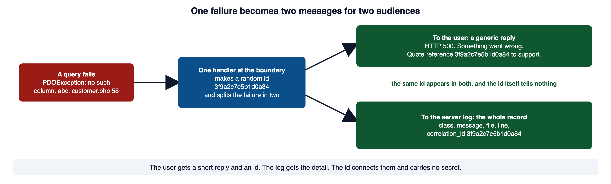
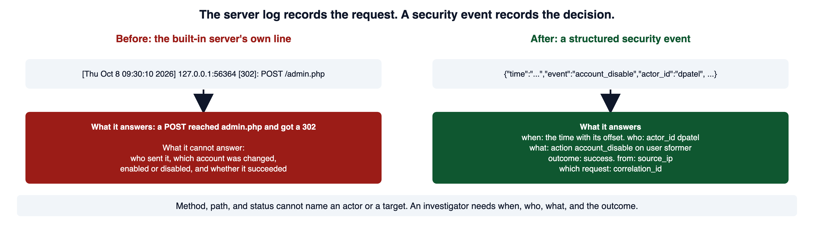
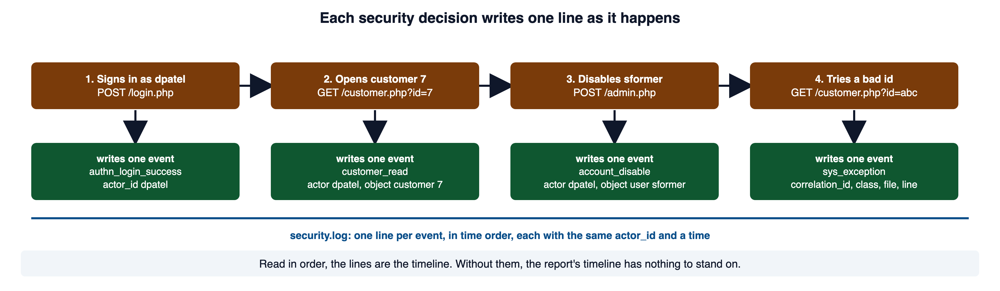
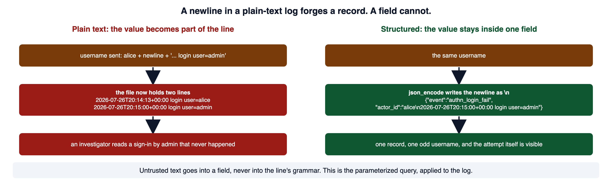
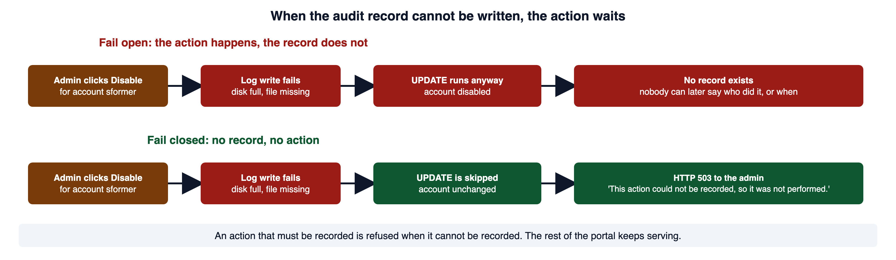
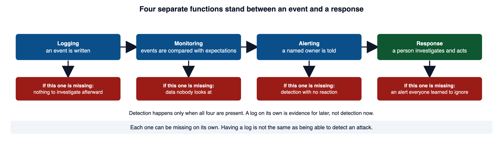
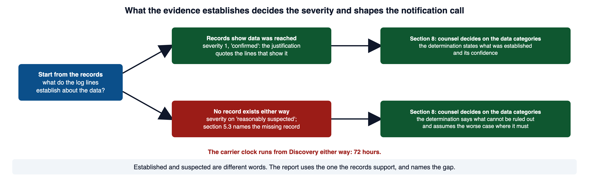
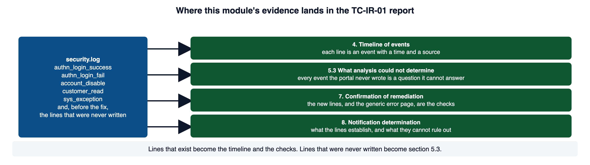

A request fails. The caller needs a controlled response, while the maintainer needs enough information to investigate. This module connects safe error handling, security logs, and response decisions without exposing secrets in either channel.
Read this page with your course environment open, so you can type each example into a small PHP file and watch what it does. Red code blocks show a shape to recognize and never ship. Green code blocks show the pattern to copy.
1Required reading
These three are required reading for the module. This page teaches everything the assignment and the quiz need. The readings give the same material in the industry's own words, which is what an advisory, an audit finding, or a bug report will use.
- OWASP Top 10:2025 A09 Security Logging & Alerting Failures. The risk category for a system that records too little, records the wrong things, or records them where nobody looks. Its list names the conditions this module repairs.
- OWASP Logging Cheat Sheet. The operative reference for this module: which events to record, which fields each event carries, what must never be written, and how to protect the log itself.
- CLARK: Post-deployment Evolution and Patching, Michael Hicks, University of Maryland. Slides on what happens to software after it ships, which is where this module lives.
2When prevention fails: fail closed, and record why
The earlier modules stopped attacks before they landed. This module assumes one got through, because in a running system one eventually does. Two questions then decide how bad it gets. Did the software fail into a safe state? And did it leave a record someone can trust?
Code is usually reviewed along the path where everything works. An attacker works the other path: a value of the wrong type, a database that refuses a query, a log file that cannot be written, a condition the designer thought could never happen. That path gets less testing, so it is where the attacker looks first.
The opposite is failing open: the check breaks, and the action goes ahead as if the check had passed. The weakness catalog calls it not failing securely (CWE-636). OWASP's category for the whole family of mishandled failures is A10:2025 Mishandling of Exceptional Conditions. Its own words for a transaction that breaks part way through: roll back every part and start again, which it calls failing closed.
The right response depends on which kind of failure it is. The reply that is correct for a mistyped form field is wrong for a crash, and the reverse.
| Failure | Example | Correct response |
|---|---|---|
| Expected client error | malformed JSON, an invalid field, an unsupported method | a 4xx that says what the client can fix |
| Authentication or authorization denial | nobody is signed in, or the policy refuses | 401, or 403 or 404 by policy, written to the log as a security event |
| Business conflict | the record changed under you, a duplicate request, nothing in stock | 409 with a code the client can act on |
| A dependency is down | the database, mail, or key service | 503, or a safe fallback |
| Unexpected exception | a defect, or a condition nobody planned for | 500, a generic body, the full detail in the server log |
MDN defines the codes. A 400 is a client error such as malformed syntax. A 401 means the client must authenticate. A 403 means the client's identity is known and access is refused. A 409 means the request conflicts with the server's current state. A 500 is the generic code for a situation the server does not know how to handle. A 503 means the server is not ready, as when it is down or overloaded.
The first four rows are conditions you expected, and you can name them to the user without giving anything away. The last row is the dangerous one, and the next section shows why.
OWASP A10:2025 Mishandling of Exceptional Conditions names the category and the roll-back rule. MDN: HTTP response status codes defines each code in the table. CWE-636: Not Failing Securely is the formal entry for failing open.
3What a verbose error tells an attacker
A verbose error is reconnaissance the application performs on the attacker's behalf. The weakness catalog calls it generation of an error message containing sensitive information (CWE-209).
The portal does this today. db.php turns error display on for every page. Its comment says the setting is there so problems show up on the page while the portal is new. The connection is also set to throw an exception on any database error. Together, those two settings mean any failing query prints its exception to the browser.
<?php
// WHY: Displaying server error details can disclose queries, paths, and configuration to callers.
// db.php, as shipped
ini_set('display_errors', '1');
error_reporting(E_ALL);
// ...
$pdo->setAttribute(PDO::ATTR_ERRMODE, PDO::ERRMODE_EXCEPTION);Vulnerable. Why: Displaying server error details can disclose queries, paths, and configuration to callers.
Here is what the portal answers when a customer page is asked for a record whose id is not a number. The query is built by concatenation, so the word abc lands inside the SQL.
HTTP/1.1 200 OK
Content-type: text/html; charset=UTF-8
<h2>Customer lookup</h2>
...
<b>Fatal error</b>: Uncaught PDOException: SQLSTATE[HY000]: General error: 1 no such column: abc
in /home/you/cloudshell_open/coastline-ics230-support-desk/customer.php:58
Stack trace:
#0 /home/you/cloudshell_open/coastline-ics230-support-desk/customer.php(58): PDO->query('SELECT * FROM c...')
#1 {main}
thrown in /home/you/cloudshell_open/coastline-ics230-support-desk/customer.php on line 58The path is the folder where your portal runs. Everything else is exactly what the page sends.
The PHP manual is direct about the setting: error display is a development feature and "should never be used on production systems." The bundled php.ini-production sets it off, and the manual advises error logging in place of error display on production sites. Turning display off is necessary. Section 4 shows why it is not the fix on its own.
CWE-209: Generation of Error Message Containing Sensitive Information is the formal entry, and its examples include a caught SQL exception printed to a web user. PHP Manual: Error handling runtime configuration documents display_errors, log_errors, and error_log and carries the production warning quoted above.
4Safe error handling: one boundary, two messages
The fix splits one failure into two messages for two audiences. The user gets a short reply that says a failure happened and nothing about why. The server log gets the whole record. One random id appears in both, so support can find the record from the reply.
How does one failure become a reply the user can see and a record the user cannot?

Open full-size image (opens in a new tab)Handle the failure once, at the edge of the application, so no single page can forget. In PHP without a framework, that edge is set_exception_handler: it registers one function that runs for any exception no try block caught, and the script stops after it runs. Put it in a file every page includes before it writes any output.
<?php
// WHY: Cryptographic random bytes avoid predictable values for security-sensitive identifiers.
// errors.php: included by every page before any output.
ini_set('display_errors', '0'); // backstop, not the fix
ob_start(); // hold the page until it is complete
$correlationId = bin2hex(random_bytes(8));
set_exception_handler(function (Throwable $e) use ($correlationId): void {
error_log(json_encode([
'time' => gmdate('c'),
'event' => 'sys_exception',
'correlation_id' => $correlationId,
'class' => get_class($e),
'message' => $e->getMessage(),
'file' => $e->getFile(),
'line' => $e->getLine(),
], JSON_THROW_ON_ERROR) . "\n", 3, __DIR__ . '/../portal-security.log');
ob_end_clean(); // throw away the half-built page
http_response_code(500);
header('Content-Type: text/plain; charset=utf-8');
echo "Something went wrong. Quote reference $correlationId to support.\n";
});Secure. Why: Cryptographic random bytes avoid predictable values for security-sensitive identifiers.
Here is a page that includes it and then fails the same way the customer page did.
<?php
// WHY: One controlled error handler returns a generic response while keeping investigation detail in the designated log.
// orders.php
require_once __DIR__ . '/errors.php';
require_once __DIR__ . '/db.php';
echo "<h2>Order lookup</h2>\n";
$ref = $_GET['ref'] ?? '';
$row = db()->query("SELECT * FROM orders WHERE ref = $ref")->fetch();Secure. Why: One controlled error handler returns a generic response while keeping investigation detail in the designated log.
The user sees this, and only this.
HTTP/1.1 500 Internal Server Error
Content-Type: text/plain; charset=utf-8
Something went wrong. Quote reference d02854efd559d792 to support.The log holds the rest, under the same id.
{"time":"2026-10-08T16:37:26+00:00","event":"sys_exception","correlation_id":"d02854efd559d792","class":"PDOException","message":"SQLSTATE[HY000]: General error: 1 no such table: orders","file":"\/home\/you\/cloudshell_open\/coastline-ics230-support-desk\/orders.php","line":7}The buffer is why the status code works. Without it, the heading would already have been sent, the headers with it, and the status would stay 200 the way it did in section 3.
<?php
// WHY: Catching Exception alone misses Error objects such as ArgumentCountError in PHP.
try {
strlen(); // an ArgumentCountError, which is an Error, not an Exception
} catch (Exception $e) {
echo "caught\n";
}Vulnerable. Why: Catching Exception alone misses Error objects such as ArgumentCountError in PHP.
Fatal error: Uncaught ArgumentCountError: strlen() expects exactly 1 argument, 0 given<?php
// WHY: Catching Throwable covers both Exception and Error objects; the printed detail here is a local teaching demonstration.
try {
strlen();
} catch (Throwable $e) {
echo get_class($e), ': ', $e->getMessage(), "\n";
}Secure. Why: Catching Throwable covers both Exception and Error objects; the printed detail here is a local teaching demonstration.
ArgumentCountError: strlen() expects exactly 1 argument, 0 givenPHP Manual: set_exception_handler documents the handler's Throwable parameter and that execution stops after it runs. PHP Manual: Throwable and PHP Manual: Error confirm that Error implements Throwable and does not extend Exception. PHP Manual: random_bytes documents the cryptographically secure bytes behind the id and the bin2hex example. OWASP Error Handling Cheat Sheet states the rule in one sentence: a generic response is returned by the application, and the error details are logged server side and not returned to the user. W3Schools: PHP Exception Handling has a live editor for try, catch, and throw.
5Logging is the input to detection
An application that fails safely but records nothing has solved half the problem. The weakness catalog calls the other half insufficient logging (CWE-778): when a security-critical event occurs, the product does not record it or leaves out important details. NIST puts the reason plainly: logs are particularly important for recording and preserving information that is vital to incident detection, response, and recovery.
Start with what the portal keeps today, because the gap is the incident. The built-in server writes one line per request to its own log, which scripts/start.sh sends to /tmp/techcorp-portal.log. Here is the line for an administrator disabling a staff account.
[Thu Oct 8 09:30:10 2026] 127.0.0.1:56364 [302]: POST /admin.phpWhat does that line answer, and what does it leave out?

Open full-size image (opens in a new tab)The line says a POST reached admin.php and was answered with a redirect. It cannot say who sent it, which account was changed, whether it was enabled or disabled, or whether the change succeeded. admin.php itself reads a username and an action from the form, runs one UPDATE on the users table, and redirects back to the page. It writes nothing else. The same is true of sign-in: auth_login returns false on a bad password and the page shows a message, and no record of the attempt exists anywhere. The login_failures table is in the schema, and nothing writes to it or reads it yet. The upload page records uploaded_by and uploaded_at on the documents row, which is a business record of the file, not an audit record of the action.
The OWASP cheat sheet says to log these where possible. Input validation failures. Authentication successes and failures. Authorization failures. Session management failures. Application errors. Higher-risk functions such as user administration, administrator actions, sensitive data access, and data export. Put against the portal, that list is the module's job.
- sign-in success and failure, so a spray of failed attempts across many accounts becomes visible;
- authorization denials, because a refused action is a control firing and often the first sign of probing;
- validation failures, which show malformed or hostile input arriving;
- administrator actions, which carry the most authority and so the most risk;
- reads of sensitive records, so access to customer data can be reconstructed.
A useful event answers a fixed set of questions. The cheat sheet groups them as when, where, who, and what. When is the time of the event. Where is the application and the part of it that emitted the event. Who is the source address and the user identity. What is the type of event, its severity, and a description. Add the outcome, the reason, and the correlation id from section 4. Write each value into its own field.
<?php
// WHY: Serialization represents structured values as data rather than hand-built executable syntax.
function log_security_event(array $fields): bool
{
$entry = ['time' => gmdate('c'), 'app' => 'portal'] + $fields;
$line = json_encode($entry, JSON_THROW_ON_ERROR) . "\n";
return error_log($line, 3, __DIR__ . '/../portal-security.log');
}
$ok = log_security_event([
'event' => 'authz_fail',
'actor_id' => 'rmarsh',
'action' => 'customer.read',
'object_type' => 'customer',
'object_id' => '7',
'outcome' => 'denied',
'reason' => 'not_assigned_rep',
'source_ip' => '203.0.113.7',
'correlation_id' => '3f9a2c7e5b1d0a84',
]);Secure. Why: Serialization represents structured values as data rather than hand-built executable syntax.
{"time":"2026-10-08T16:32:24+00:00","app":"portal","event":"authz_fail","actor_id":"rmarsh","action":"customer.read","object_type":"customer","object_id":"7","outcome":"denied","reason":"not_assigned_rep","source_ip":"203.0.113.7","correlation_id":"3f9a2c7e5b1d0a84"}The OWASP Logging Vocabulary Cheat Sheet gives standard event names, so events from different parts of a system line up: authn_login_success, authn_login_fail, authz_fail, sys_crash, and others in the same shape. Use its names where one fits, and its shape where none does.
Each security decision writes one line as it happens. What do the lines look like across one administrator's session?

Open full-size image (opens in a new tab)OWASP Logging Cheat Sheet, which events to log and its event attributes section are the source for the lists. OWASP Logging Vocabulary Cheat Sheet gives the event names and the ISO 8601 rule. PHP Manual: error_log documents message type 3, the missing newline, and the relative-path caveat. PHP Manual: gmdate and PHP Manual: DateTimeInterface::format document the UTC time and the c format. NIST SP 800-61 Rev. 3 is the source of the sentence on why logs matter (its note on outcome PR.PS-04).
6What must never enter a log
A log that captures too much is its own breach. The usual way a secret lands in a log is not malice. It is a well-meaning dump of the whole request.
<?php
// WHY: Building structured output from unchecked text can change the output structure.
// "Log everything, we might need it." The password goes with it.
error_log('login attempt: ' . json_encode($_POST));Vulnerable. Why: Building structured output from unchecked text can change the output structure.
login attempt: {"username":"rmarsh","password":"hunter2"}That line is a fresh compromise. Anyone who can read the log now holds a working credential, and nothing errored to warn you. The weakness catalog calls it insertion of sensitive information into a log file (CWE-532).
The repair records that the event happened and who it involved, using identifiers that are not secrets.
<?php
// WHY: Structured event fields preserve the meaning of an action without depending on ambiguous prose.
log_security_event([
'event' => 'authn_login_fail',
'actor_id' => $username, // an identifier, not a secret
'outcome' => 'invalid_credentials',
'source_ip' => $sourceIp,
]);Secure. Why: Structured event fields preserve the meaning of an action without depending on ambiguous prose.
The OWASP cheat sheet's exclusion list is longer than the critical block above. It also names application source code, sensitive personal data, data a user did not consent to provide, and anything above the logging system's own classification. Such data is removed, masked, hashed, or encrypted before it is written. A hashed session id may be kept where one is needed. A failed password is still a secret. It is often a real password typed into the wrong field.
OWASP Logging Cheat Sheet, data to exclude is the list. CWE-532: Insertion of Sensitive Information into Log File is the formal entry. OWASP Proactive Controls C9: Implement Security Logging and Monitoring states the same rule for passwords, session ids, card numbers, and social security numbers.
7Keeping the log trustworthy
A log is evidence only if it can be trusted. Two different problems undermine that: an attacker who writes into it, and an attacker who reaches it.
Recall the words from Module 01: a source is where untrusted data enters, and a sink is the operation that hands data to another reader. A log is a sink. Its reader is the investigator, and the grammar they read is "one line is one record." Untrusted text written straight into that grammar is injection aimed at your own evidence. The weakness catalog calls it improper output neutralization for logs (CWE-117).
<?php
// WHY: Concatenating untrusted text into a line allows newline characters to forge additional log entries.
// Plain text, the value pasted straight into the line.
file_put_contents(
'/var/log/portal/app.log',
date('c') . " login user=$username\n",
FILE_APPEND
);Vulnerable. Why: Concatenating untrusted text into a line allows newline characters to forge additional log entries.
A username is untrusted input. Suppose someone submits alice, then a newline, then 2026-07-26T20:15:00+00:00 login user=admin. The newline ends the real line and a forged one follows it.
2026-07-26T20:14:13+00:00 login user=alice
2026-07-26T20:15:00+00:00 login user=adminThe second line looks exactly like a genuine event. How does a structured record stop that?

Open full-size image (opens in a new tab){"event":"authn_login_fail","actor_id":"alice\n2026-07-26T20:15:00+00:00 login user=admin","outcome":"invalid_credentials"}The other problem is the log as a target. The OWASP cheat sheet and Proactive Control C9 give the rules for protecting it. Here they are, with what each one defends against:
- restrict who can write and who can read, and record every access to the log itself, so the record outlives the person it describes;
- build in tamper detection, so a changed or deleted record can be noticed;
- copy logs off the host that writes them, and to read-only storage as soon as possible, so a compromised host cannot edit its own history;
- synchronize time across every machine, because a timeline built from clocks that disagree is fiction;
- notice when logging stops, since an attacker who can force a logged error can repeat it until the disk fills;
- set retention by legal, regulatory, and contractual need, and keep logs no longer than that, because a log is also personal data.
The last rule has a second half people skip. The cheat sheet says logs must not be destroyed before the required retention period and must not be kept beyond it. Retention is a decision, not a default.
What should happen when the log cannot be written? The cheat sheet says a logging failure must not stop the application or leak information. For an action whose requirement includes being recorded, failing closed from section 2 means refusing that one action with a safe message while everything else keeps serving. OWASP A09's own prevention list ends the point with two words: always fail closed.

Open full-size image (opens in a new tab)<?php
// WHY: The rejection branch must stop or exclude further processing so denied input cannot reach the protected operation.
// Record the request first. It is not yet evidence of a successful update.
$written = log_security_event([
'event' => 'account_disable',
'actor_id' => $actorId,
'object_type' => 'user',
'object_id' => $username,
'outcome' => 'requested',
]);
if (!$written) {
http_response_code(503);
exit("This action could not be recorded, so it was not performed. Try again later.\n");
}
q('UPDATE users SET disabled = 1 WHERE username = ?', [$username]);
// A completed implementation also records the actual update result.Secure. Why: The rejection branch must stop or exclude further processing so denied input cannot reach the protected operation.
HTTP/1.1 503 Service Unavailable
This action could not be recorded, so it was not performed. Try again later.CWE-117: Improper Output Neutralization for Logs is the formal entry, and its example is a newline forging a second entry. PHP Manual: json_encode documents the escaping and JSON_THROW_ON_ERROR. OWASP Logging Cheat Sheet, protecting the log is the source for the six rules, time synchronization, and retention. The fail-closed sentence is from the prevention list of the A09 entry in section 1.
8From a log line to a response
Having a log is routinely mistaken for being able to detect an attack. Four separate functions stand between an event and a person acting on it, and each one can be missing on its own.
| Function | What it does | What is lost if it is missing |
|---|---|---|
| Logging | writes down that an event happened | nothing to investigate afterward |
| Monitoring | compares events and system state against expectations | data nobody looks at |
| Alerting | tells a named owner when a condition is met | detection with no reaction |
| Response | a person investigates and acts | an alert everyone has learned to ignore |
Which of the four is the portal missing today, and what is lost at each break?

Open full-size image (opens in a new tab)A log sitting unread on a host supports a later reconstruction and detects nothing in the moment. OWASP A09 lists both failures by name: logs of applications and APIs that are not monitored for suspicious activity, and alerts that are not received or reviewed within a reasonable time. It also names the two things an alert needs that teams forget: a threshold, and a playbook for the person who receives it.
Module 02 section 10 defined the playbook and the runbook, and the lifecycle a response follows: preparation, detection and analysis, containment, eradication, recovery, and lessons learned. This module adds the input side of detection. The carrier's own playbook, which TechCorp's runbook was adapted from, makes the link concrete. Its preparation step P-2 requires centralized logging of security-relevant events, kept twelve months with ninety days available for immediate query. Its detection step D-6 applies once an incident is suspected. It says to retrieve all authentication events, privilege changes, and administrative actions for the affected systems, covering the thirty days before the earliest suspected activity. Every one of those is an event the portal did not write. A playbook step that asks for records that do not exist cannot be run.
NIST's current guidance says the same from the other direction. Its detection outcomes call for continuously monitoring log events for known malicious and suspicious activity, for transferring log data to a small number of log servers, and for correlating events from multiple sources. Correlation needs a shared key, which is what the correlation id and a synchronized clock provide.
Cyber Incident Response Playbook, Kestrel Specialty Insurance Group is the carrier document; its sections 4 and 5 hold steps P-2 and D-6. The NIST detection outcomes (DE.AE) are in SP 800-61 Rev. 3, linked in section 5. The alert conditions are from the A09 entry in section 1.
9Severity and the notification determination
The TC-IR-01 form asks for two judgments that depend on evidence: the severity in section 1, and the notification determination in section 8. Module 02 section 10 defined the four severity tiers and who holds each role. This section is about how the records you have, and the records you do not have, decide what you can write in those two places.
Section 1 of the form asks for the severity "per runbook §4, with one sentence of justification." Here are the tiers from TechCorp's runbook, which is the Incident Response Runbook page in Module 02.
| Tier | The runbook's test |
|---|---|
| 1, Critical | customer records or the staff accounts are known or reasonably suspected to have left the system; or someone has acted in the portal as a rep who is not that rep |
| 2, High | a confirmed way to reach or change customer data without authorization exists, with no evidence yet that it has been used |
| 3, Moderate | one account or one machine is affected, and there is no evidence customer data was reached |
| 4, Low | an unsuccessful attempt, or a policy violation with no impact |
Read the words the tiers turn on: known, reasonably suspected, confirmed, no evidence. Those are statements about what the records establish. The carrier's own scale draws the same line between tier 1, "confirmed unauthorized access," and tier 2, "suspected unauthorized access." The justification sentence names the record that supports the word you chose. When the portal wrote no record, "no evidence that customer data was reached" is true and means nothing, because nothing would have shown it. The honest justification says so, and the tier is chosen on reasonable suspicion rather than on silence.
The 72-hour clock that section 1 records starts at Discovery, whatever the records show. The carrier requires notice within seventy-two hours of Discovery for any incident reasonably likely to result in a claim. A thin timeline does not pause it.
Section 8, the notification determination, asks who decided whether anyone must be told, on what basis, and the outcome. The form says that when regulated data categories are involved, counsel makes this call, not the technical team, and that the carrier's involvement is recorded. The basis is the data categories in section 3. That is why section 3 names a tax identifier rather than "customer data." The technical team's part is to state, with its confidence, what the records establish and what they cannot rule out. When the records cannot show whether data was reached, the determination says that in those words. The worked example from Module 01 did exactly this. Counsel directed that distribution of the data be assumed rather than argued, because nothing inside the company could answer the question.
What does each path look like from the records to the two judgments?

Open full-size image (opens in a new tab)The sources for this section are course documents. The TC-IR-01 Form and Worked Example page in the Course Orientation module holds sections 1 and 8 of the form and TC-IR-001's section 8. The Incident Response Runbook page in Module 02 holds the tiers in its section 4. The carrier's Appendix A tiers, step D-4, step D-9, and section 8.1 are in the playbook linked in section 8.
10The ten sections of TC-IR-01, and where this module's evidence lands
Module 02 section 10 showed how the form's sections follow the lifecycle. This module's incident uses all ten, so here they are by name, with what the logging and error work puts in each.
| Section | What this module puts there |
|---|---|
| 1. Administrative details | the severity with its justification from section 9, Discovery with its time zone, earliest established activity, the Incident Commander |
| 2. Executive summary | written last: the portal kept no audit trail and leaked error detail, what that cost, where things stand |
| 3. Systems and data affected | the whole portal, because the gap is portal-wide; the data categories an audit trail touches, named precisely |
| 4. Timeline of events | each event with a time and the source that proves it; where the source is a record that was never written, the row says so |
| 5. Detection and analysis | 5.1 how the gap was found; 5.2 the two weaknesses with their CWE numbers and whether each lives in code, configuration, or design |
| 5.3 What analysis could not determine | each question the missing records make unanswerable, with the missing record named |
| 6. Response actions | 6.1 any stopgap, labeled as a mitigation; 6.2 the remediation, pseudocode first, then code; 6.3 recovery and the monitoring applied |
| 7. Confirmation of remediation, annotated | the checks from section 11, each with what it proves and what it does not |
| 8. Notification determination | the determination from section 9, with its confidence and what cannot be ruled out |
| 9. Post-incident actions | corrective actions with owners and dates; the lesson from the blameless review |
| 10. Closure and attestation | the Incident Commander's sign-off, only when section 7 is finished |
Section 5.3 is the center of this report. The form says the section is mandatory and that an empty one is not credible, and that each entry reappears in section 9 as a corrective action. For this incident the entries are the events the portal never wrote: who signed in and when, which failed sign-ins came before a compromise, which administrative actions were taken, which records were read. Write each one as a question the current records cannot answer, name the missing record, and do not guess the answer. Naming the gap exactly is the professional move.
Where do the log lines, old and new, go in the report?

Open full-size image (opens in a new tab)NIST adds one point about the lines themselves. Collected incident data is still evidence, defined as grounds for belief or disbelief, even when no prosecution is expected, and it should be kept under the organization's evidence preservation procedures. The log lines you capture for section 7 are kept, unedited, with the report.
The source for the ten sections is the TC-IR-01 Form and Worked Example page in the Course Orientation module. The evidence sentence is NIST SP 800-61 Rev. 3, outcome RS.AN-07, linked in section 5.
11How you know the fix worked
A change to error handling or logging is a claim until a test shows it. Run this set on your own instance and keep the output as the evidence section 7 needs.
| Test | Expected result |
|---|---|
| Malformed input to a page that queries the database | a generic message; no stack trace, SQL, path, or version on the page |
The same request, status line checked with curl -i | 500, not 200 |
| The correlation id from that reply, searched for in the log | finds one record with the class, message, file, and line |
| A successful sign-in | one structured event with actor, action, and outcome |
| A failed sign-in | one structured event, and no password anywhere in it |
| An administrator enabling or disabling an account | one structured event naming the actor, the action, and the account changed |
| A read of a customer record | one structured event with the object type and id, not the record's contents |
| A username containing a newline and fake log text | one record, the value inside one field, no forged second line |
| Every new log line, read through | no password, token, session id, or key |
| The log file made unwritable, then an administrator action attempted | the action is refused with a 503, not performed silently |
The last row is failing closed from section 2. If an action must be auditable and the audit cannot be written, the action has not met its requirement, so it is refused rather than performed without a record.
The two cheat sheets are linked in sections 1 and 4.
12Common misconceptions
✕"Hide the error with a friendly page or some CSS."
If the detail was sent to the browser, it was disclosed. What the page chose to display is not the question. The response body is.
✕"Turn
display_errorsoff and the leak is fixed."That hides output from failures you never handled. One misconfigured environment or debug tool brings it back. Handle the failure in code, then turn display off as a backstop.
✕"Catch
Exceptionand you have caught everything."PHP's
Errortree, including the type and argument errors hostile input provokes, does not extendException. The boundary acceptsThrowable.✕"Log everything, so nothing is missed."
Excess data creates privacy exposure, storage cost, and noise that buries the real event. Record what answers an investigator's questions and nothing more.
✕"A failed password is fine to log, since it was wrong anyway."
It is still a secret, and often a real password typed into the wrong account. Log the attempt and the actor, never the password.
✕"We have logs, so we would detect an attack."
Logging is one function. Monitoring, alerting, and response are three more, and each can be absent on its own.
✕"Nothing was logged, so nothing happened."
A log that was never written cannot show absence. Say what the records establish and what they cannot, and choose the severity on reasonable suspicion.
✕"Failing closed means taking the whole site down."
It means keeping the safest state for the affected action, which is usually one request refused while the rest keeps serving.
13Check your understanding
Work these before you look at the answers.
- A page throws an unexpected exception. What should the user see, and what should the server keep?
- What is a correlation id, and why is it safe to show a user?
- Name four categories of security-relevant event a log should record.
- Which weakness is it when the application records none of them, and how did that leave gaps in the earlier incident timelines?
- List four things that must never be written to a log.
- How does an untrusted value forge a second line in a plain-text log, and what removes the problem?
- Why is turning
display_errorsoff necessary but not the fix? - Why does the boundary handler accept
Throwablerather thanException? - A log exists but no attack was detected. Which three functions beyond logging were missing?
- A sensitive action must be auditable, and the log cannot be written. What should happen, and why?
- The portal wrote no sign-in records. What does "no failed sign-ins were recorded" establish about the sign-ins, and what word does the severity rest on instead?
- What decides log retention?
Answers: (1) a generic message and a correlation id, with the exception class, message, file, line, and trace kept only in the server log. (2) a random, meaningless string written into both the reply and the server record; it carries no secret or internal detail, so the user can quote it and support can find the record. (3) any four of sign-in successes and failures, authorization denials, validation failures, administrator actions, and reads of sensitive records. (4) insufficient logging (CWE-778); the events were never written, so who did what and when could not be reconstructed. (5) any four of passwords including failed ones, session ids, reset or access tokens, full card or tax numbers, API or private keys, connection strings. (6) a newline in the value ends the real line and starts a forged one; structured logging keeps the value inside one field, because json_encode writes the newline as \n. (7) it hides unhandled output, but one misconfiguration or debug tool brings the disclosure back, so the failure is handled in code and display is turned off as a backstop. (8) PHP's Error types do not extend Exception, and Throwable is the interface both implement. (9) monitoring, alerting, and response. (10) the action is refused with a safe message, because an action that must be recorded has not met its requirement if it cannot be, which is failing closed. (11) nothing about the sign-ins, only that the logging was absent; the severity rests on "reasonably suspected." (12) legal, regulatory, and contractual need, and the risk of holding the data; logs are kept no shorter and no longer than that.
14References and further study
The three required readings in section 1 and the manual pages linked through the lecture are the main references. Each entry below names what it confirms.
- CWE-778: Insufficient Loggingcwe.mitre.org
The formal entry behind section 5: a security-critical event that is not recorded, or recorded without important details.
- OWASP Top 10:2025 A09 and A10top10.owasp.org
The index for the two categories this module names, A09 in section 1 and A10 in section 2.
- NIST SP 800-61 Rev. 3 publication pagecsrc.nist.gov
Confirms the title, Incident Response Recommendations and Considerations for Cybersecurity Risk Management, the April 2025 date, and that it supersedes Revision 2, whose publication page records the withdrawal on April 3, 2025.
- PHP Manual: Error Handling and Loggingphp.net
The book that holds
error_log,set_exception_handler,set_error_handler, and the runtime configuration from section 3. - PHP Manual: set_error_handlerphp.net
The companion to the exception handler, for warnings and notices, named in section 4's note.
- PHP Manual: ini_setphp.net
Confirms a setting changed with
ini_setlasts for the script's execution, which is howdb.phpturns display on anderrors.phpturns it off. - PSR-3: Logger Interfacephp-fig.org
The PHP interoperability standard for logging: eight levels and a context array, the same structured idea as section 5's helper, for when a project adopts a library.
Videos.